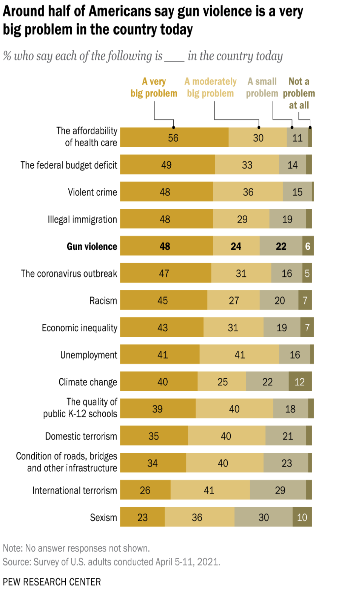

Introduction
Gun violence is so prevalent in America that oddly even the announcements surrounding incidents have become a spectacle themselves. As a Freshmen at Michigan State University this 2022-2023 school year in the midst of the tragic shooting we had on campus I had received calls from friends and relatives asking about the details as though they had been watching the latest thriller. Even on campus there were people I knew taking selfies of themselves in front of their windows with the sea of police lights behind them. Some people went as far as trying to crack jokes with the officers a few stories below them in the middle of finding the possible suspected shooter(s) at the time. This demonstrates just how desensitized we’ve become over what is quite literally a life or death issue.
Statistics
In 92% of the reported cases shooters involved in k-12 shootings were suicidal, while 100% were in the case of college/univeristy students.
“Between 2019 and 2020, the total number of mass shootings each year jumped from 417 to 610. Then, 2021 became the worst year for mass shootings since GVA began tracking them in 2013, with 690 across 44 states and Washington, DC. There were 647 mass shootings in 2022.”
Children and Accidental Shootings: Every year, hundreds of children in the United States are unintentionally injured or killed by firearms. In 2020, there were over 300 unintentional shootings by children, resulting in more than 140 deaths. (Source: Gun Violence Archive)
Suicides: Firearms are the most common method used in suicide attempts in the United States. In 2019, nearly 24,000 suicides were committed using firearms. (Source: Centers for Disease Control and Prevention)
Visual Representation
 This is how you add captions under an image. Cite your image here. You may also say something about it, if you like.Just like a quote, you should not leave an image resting there. Say something about what the image does for your site.
Finally, you may also include a video. Not every member has to do all three. Choose whether you want a video to cite and unpack or a PDF. If it is a video, you only need to include the video and information about it (your summary). If it is a PDF, you should include a picture.
Information by Samantha Hurn's Chapter on "Animality" · Images by Marymount University